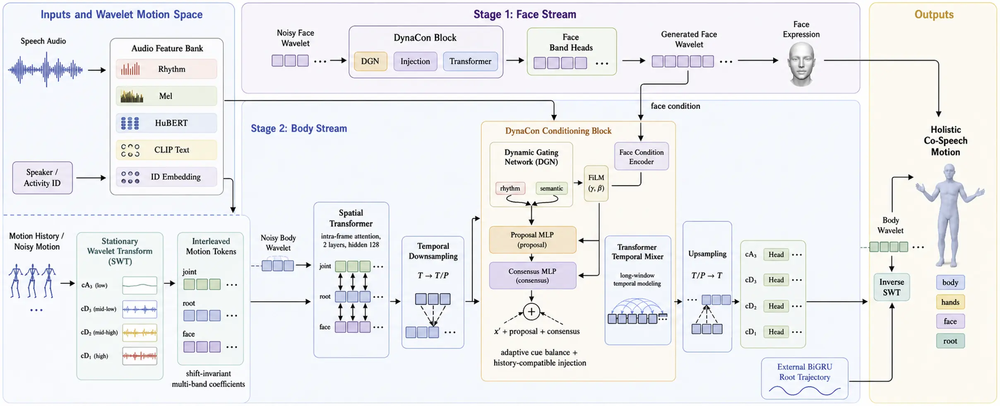

Abstract
Holistic co-speech animation must coordinate body, hands, face, and root motion over long sequences while remaining editable. DynaConTalk performs diffusion in stationary wavelet transform (SWT) coefficient space, separating coarse posture evolution, gesture strokes, and fast expressive details into aligned frequency bands.
Matched-noise constraint injection re-noises clean history or sparse user constraints to the current diffusion level before injection. This turns long-window continuation and localized editing into in-distribution denoising rather than post-hoc stitching, while dynamic multimodal conditioning negotiates rhythm, acoustic, semantic, text, identity, and activity cues over time.
Method
Structure first
DynaConTalk combines an aligned frequency representation, frame-wise multimodal conditioning, and diffusion-compatible history and editing constraints.

Representation
Stationary Wavelet Motion Space
Frequency-aligned motion decomposition.
SWT separates coarse posture, gesture strokes, and fast expressive detail without changing sequence length. Per-band normalization gives low-amplitude dynamics their own learning scale, while inverse SWT brings every band back into coherent motion.
Conditioning
Dynamic Gating & Consensus
Frame-wise multimodal condition negotiation.
DGN balances rhythm, acoustic, semantic, text, identity, and activity cues frame by frame. A proposal path introduces the useful signal; consensus corrects or reinforces it against the current motion state.
Controllable Generation
Matched-Noise Constraint Injection
Diffusion-compatible history and editing constraints.
Matched-noise injection re-noises history or sparse edits to the current diffusion step before insertion. Time, body-part, and wavelet-band masks localize control while the denoiser preserves the surrounding motion.
DynaConTalk
Paper and code
The code, the released models and DynaConTalk Studio are on GitHub. The paper link will be added after the arXiv release.